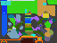
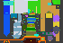

Noita Wand Atlas
This website displays the locations of Big Wands that can be spawned in various ways (and now potions!). Such wands are occasionally useful for obscure builds that require more than 26 slots.
Taikasauva wands are the most accessible, and just require spawning a taikasauva at the specified coordinates. End of Everything drops work the same as those of the original Orb Atlas.
Potions are specified as text and must be the exact in-code name of the material, as seen in materials.xml.
All of the web design for this site was done by Kaliuresis! I'm only responsible for the additional Noita searching features.

